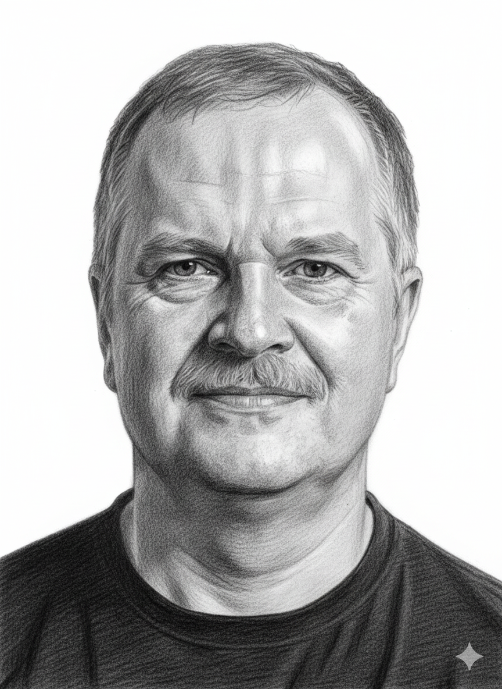

Лобанов Альберт Николаевич
Преподаватель информатики
Лицей имени Н. Милеску Спэтару, Кишинэу
Научный руководитель исследовательских и инженерных проектов международного уровня
Готовлю учеников к олимпиадам по информатике и руковожу их проектами в области искусственного интеллекта. Мои ученики — победители Intel® AI Global Impact Festival 2024 и 2025, победители и призёры международной олимпиады JBOI, Республиканской олимпиады по информатике, MoldSEF.

Педагогические подходы
Исследовательские и инженерные проекты
Руковожу проектами учеников в области искусственного интеллекта и компьютерного зрения — от постановки задачи до защиты на MoldSEF и Intel® AI Global Impact Festival. Пример — оценка состояния дорожного покрытия с помощью YOLOv8.
Олимпиадная подготовка
Системная подготовка к республиканским и международным олимпиадам по информатике. Ученики — победители и призёры Республиканской олимпиады каждый год с 2022 по 2026 (1 место в 2022), серебряная медаль JBOI 2022.
STEAM-образование
Интеграция науки, технологий, инженерии, искусства и математики через практические проекты, связывающие теорию с реальным программированием и веб-разработкой.
Междисциплинарный подход
Связываю информатику с другими предметами: математикой, физикой, химией. Показываю практическое применение алгоритмического мышления в различных областях науки и жизни.